One human. One AI. Infinite possibilities.
🚀 Our Products

MediaLog
Your personal media tracking dashboard. Beautifully combines Letterboxd and Goodreads data to track movies and books in one place. Features: "On This Day" memories, reading/viewing streaks, year-end projections, director and author analytics.

AI Workflows
Documentation and tutorials on effective human-AI collaboration patterns. Learn prompt engineering, agentic coding workflows, debugging strategies, and how to build production applications with Claude, GPT-4, and specialized AI tools.
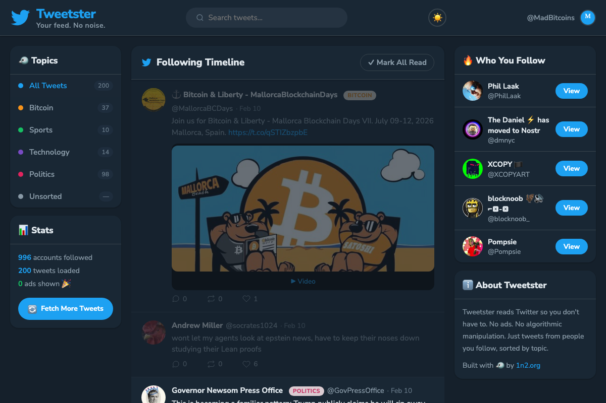
Tweetster
Your Twitter feed, without the noise. Tweetster reads Twitter so you don't have to — pulling tweets from your 996 followed accounts and organizing them by topic: Bitcoin, Sports, Technology, and Politics. No ads, no algorithmic manipulation, just the tweets you actually want to see. Classic Twitter vibes included.
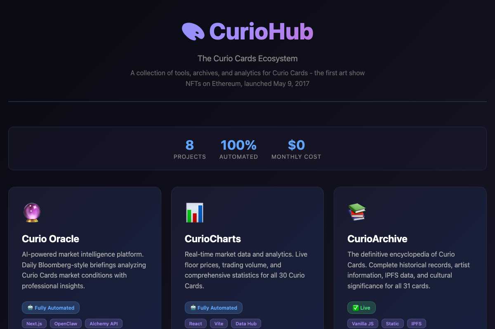
CurioHub
The central portal to the complete Curio Cards ecosystem. Access all 7 Curio projects: Oracle (AI briefings), Terminal (analytics), Review (magazine), CurioCharts (live data), CurioArchive (encyclopedia), and Curio Data (public API). One unified hub powered by centralized data architecture with 100% automated updates. Free, open source.
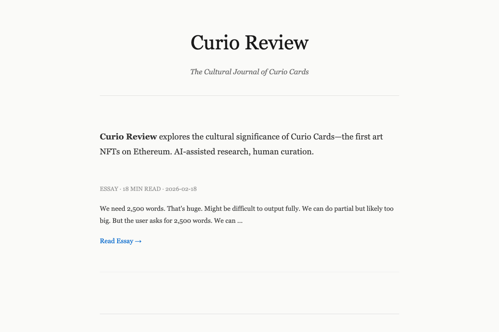
Curio Review
AI-powered editorial magazine exploring the cultural significance of Curio Cards. Weekly longform essays (2,000-4,000 words) generated by OpenClaw AI and curated by humans. Topics rotate through history, art criticism, market philosophy, and collector stories. Think The New Yorker meets Artforum for NFTs. Fully automated publication every Monday.
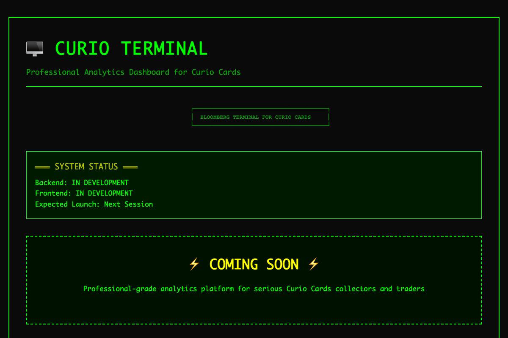
Curio Terminal
Professional analytics dashboard with Bloomberg Terminal aesthetic. AI-powered market commentary, supply shock detection, rarity-adjusted valuations, and wallet analysis. Automated backend intelligence with OpenClaw generates daily insights, alerts, and trading signals. Dark terminal UI for power users and serious collectors.
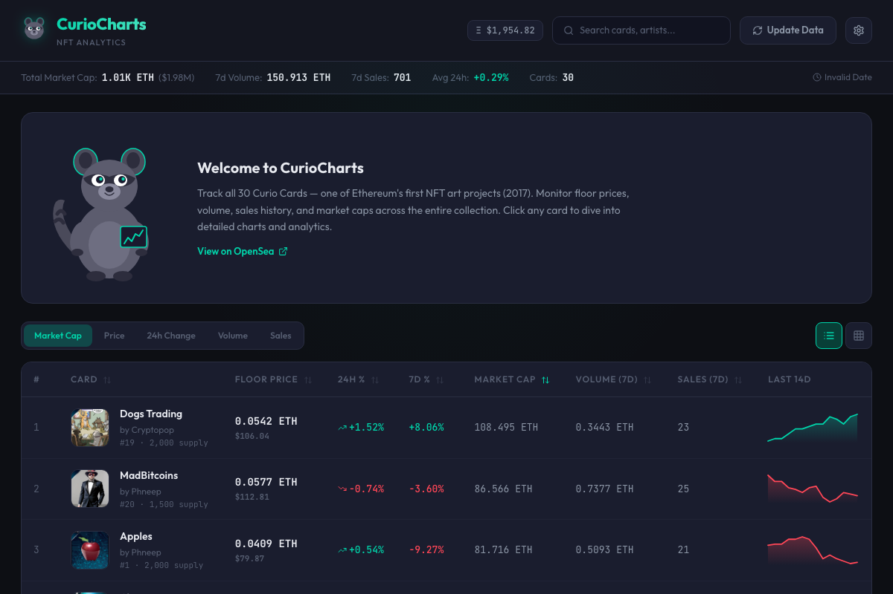
CurioCharts
Real-time NFT market tracker for Curio Cards — the first art on Ethereum (May 2017). Live floor prices scraped from OpenSea for all 31 cards, with individual token floors, market cap, and historical data. Beautiful React interface showing the complete Curio Cards collection with accurate pricing and rarity rankings.

Curio Oracle
AI-powered daily market intelligence for Curio Cards. Automated briefings generated every morning at 6 AM analyzing floor prices, volume, sales activity, and holder trends. Professional Bloomberg-style analysis using OpenClaw AI agent with zero human intervention. 100% automated market insights powered by local AI.
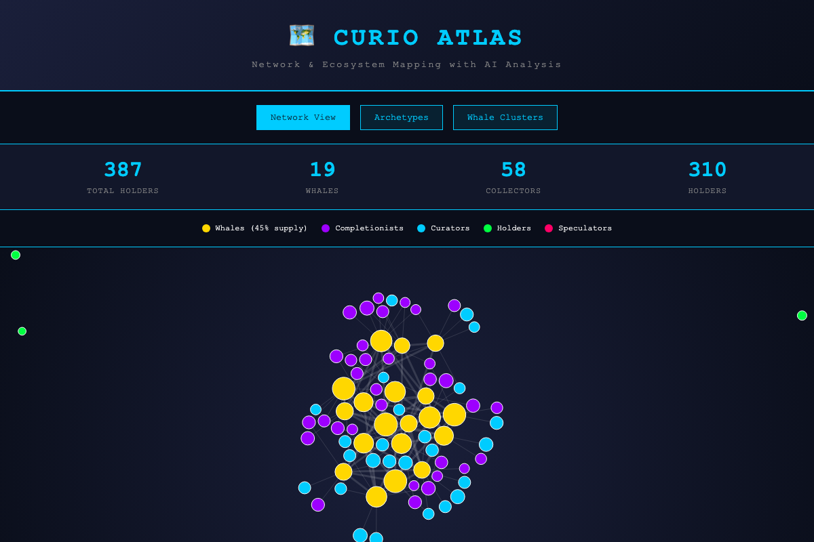
Curio Atlas
Network & ecosystem mapping for Curio Cards with live blockchain data. Visualizes 4,954 real holders from Ethereum using D3.js force-directed graphs. Features AI-powered archetype classification (whales, completionists, curators, holders, speculators), network topology analysis, and interactive exploration. Powered by Alchemy API with SQLite database storing all holder data, token balances, and network connections. Updates automatically every 6 hours.
Checklister
A clean, focused checklist app for getting things done. Create and manage checklists with a beautiful, distraction-free interface. Built for speed and simplicity — just you and your tasks, nothing else.
Mad Patrol
A retro arcade game inspired by the classic Moon Patrol — reimagined with a Bitcoin twist. Battle through 8 wild levels including side-scrolling, underwater, flying, and top-down stages, each with unique rulesets and a final boss fight against Satoshi himself. Arrow keys to move, Space to shoot in three directions. No install, no ads — just pure arcade chaos in your browser.
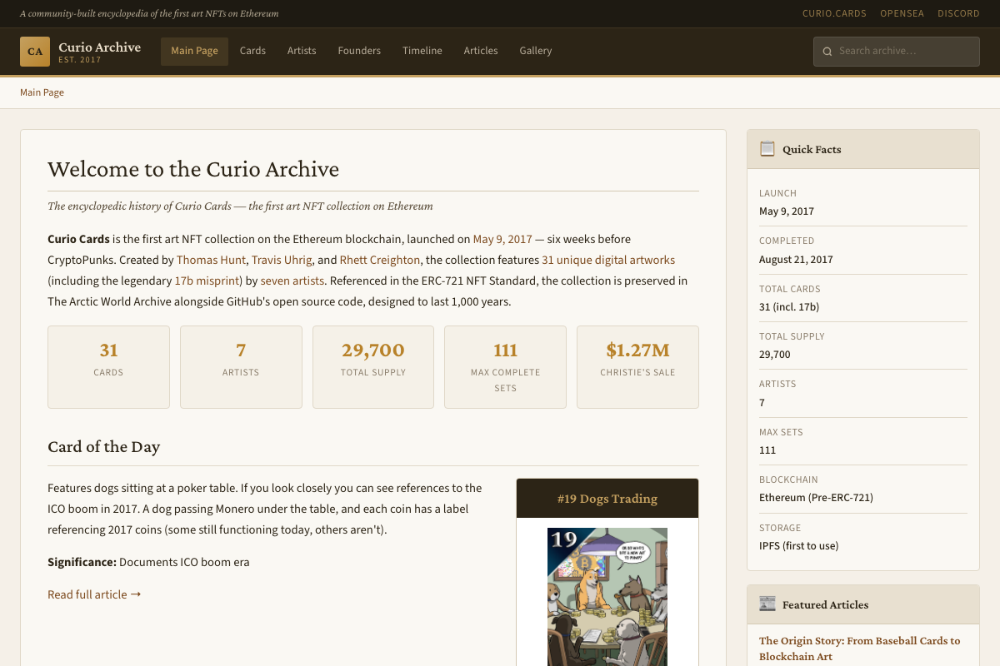
Curio Archive
A Wikipedia-style encyclopedia documenting the history and lore of Curio Cards — the first art NFT collection on Ethereum, launched May 9, 2017. Browse all 31 cards with full details, 7 artist profiles, founder bios, a chronological timeline, in-depth articles, and a filterable gallery. Features search, Card of the Day, and beautifully designed infoboxes.
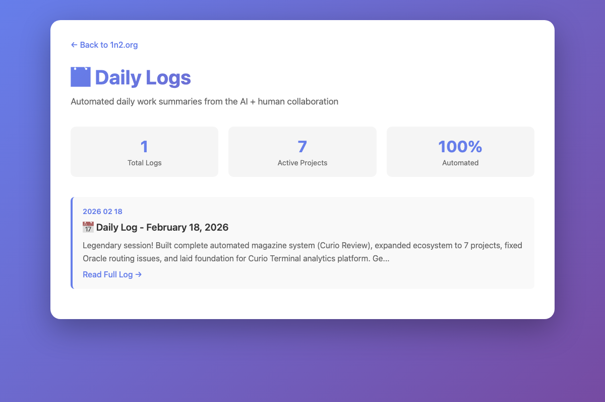
Daily Logs
Automated daily work summaries generated by OpenClaw AI. Track development progress, system automation, and project updates across the entire ecosystem. Each log speculates on activities, documents metrics, and forecasts tomorrow's work. Complete transparency into AI + human collaboration with professional daily documentation.
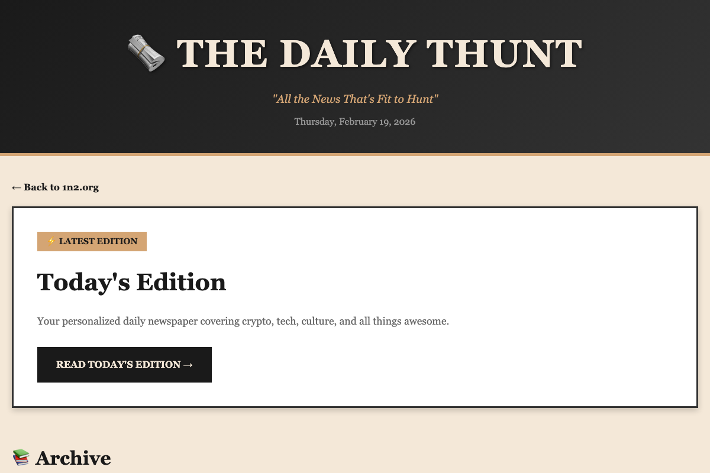
The Daily THunt
Your personalized AI-powered daily newspaper! Daily Bugle meets crypto meets superheroes. OpenClaw generates punny, informative editions covering Bitcoin, Ethereum, Curio Cards, tech, space, culture, with superhero quotes from Carlin, Bowie, Einstein. Executive summaries, data analysis, predictions. Fun, serious, and automatically delivered every morning!
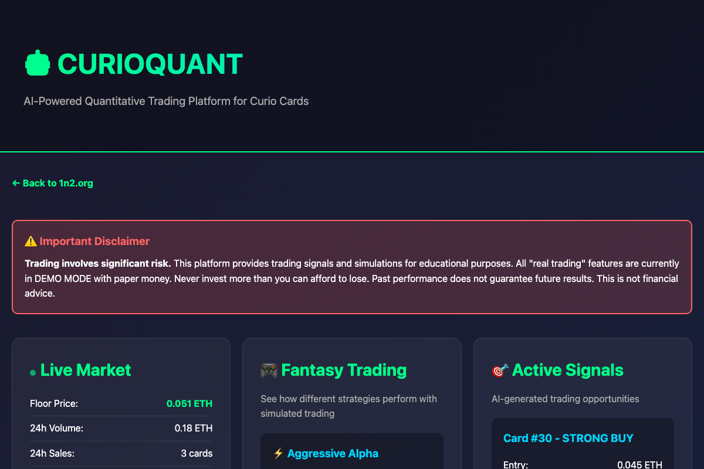
CurioQuant
AI-powered quantitative trading platform for Curio Cards. Three fantasy strategies (Aggressive, Balanced, Conservative) with live signals, backtests, and projections. OpenClaw analyzes rarity, detects opportunities, simulates trades. Paper trading, portfolio tracking, risk management. See historical and predicted returns!
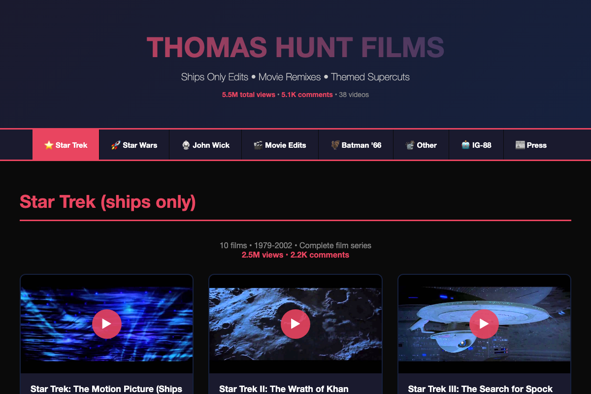
Thomas Hunt Films
Video portfolio site for filmmaker Thomas Hunt, creator of viral "Ships Only" edits with 4.6M total views on YouTube. Browse 37 videos across 6 categories: Star Trek (2.5M views), Star Wars (2.1M views), John Wick gun-fu, Movie Edits, Batman '66 remixes, and more. Complete with real YouTube stats, press archive, and individual video pages. Professional showcase built with Python generators.

thunt.net
Personal blog archive with 526 curated posts spanning 20+ years (2003-2025). Features Net Interest archiving system with local copies of linked content, TMDb movie poster integration, and organized categories. Classic blog design with robust link preservation, tag filtering, and search. A living archive of internet culture and personal commentary.

THunt Reader
Personal internet dashboard replacing Google Reader and Yahoo. Scrapling-powered news aggregation, Twitter feeds via Nitter, crypto prices, Goodreads/Letterboxd integration, and article archiving. Manila envelope design. Updated daily at 3 AM.

MB Games
Mad Bitcoins game studio. Retro-style browser games with crypto themes including Bear Market Breakout and Mempool Meltdown. Built with vanilla JavaScript, pixel art aesthetic, playable directly in browser.

Curio-DID
Difference-in-Differences causal analysis for Curio Cards NFTs. Estimates whether marketplace events, viral tweets, and whale purchases actually caused price changes — not just correlation. Published research paper, interactive charts, statsmodels OLS.
Case Studies
Real-world examples of AI-assisted projects: from concept to deployment. Complete development diaries showing what works, what fails, token costs, debugging sessions, and lessons learned from building with AI.
Bitcoin Trains
A train-themed Bitcoin arcade game. Navigate railways, collect sats, and build your crypto railroad empire in this retro-style JavaScript game.
THunt Data Labs
Central data warehouse with 10,000+ records across YouTube comments, Curio Cards NFT data, news articles, and tweets. Tabbed dashboard with stats, charts, and collection logs.
Bitcoin Ships
A space-themed Bitcoin battleship game. Navigate the crypto cosmos, dodge obstacles, and collect sats in this retro arcade experience built with vanilla JavaScript and CSS.
THunt Wiki
Wikipedia-style encyclopedia of Curio Cards, Mad Bitcoins, World Crypto Network, and the people who shaped early crypto media and NFT history. 27 articles with references and images.
Commentzor
YouTube comment database and viewer. Scrapes ALL comments from Mad Bitcoins, Thomas Hunt Films, and World Crypto Network into a searchable SQLite database with leaderboards and stats.
About 1n2
At 1n2, we believe the future isn't about AI replacing humans—it's about humans and AI working together to achieve what neither could alone. We're exploring the frontier of human-AI collaboration through practical tools, real-world applications, and hands-on experimentation.
Founded by Thomas Hunt, a history major turned AI power user, 1n2 represents a pragmatic approach to AI: learn by building, iterate quickly, and create tools that solve real problems. No buzzwords, no hype—just humans and AI getting things done.
Our philosophy is simple: AI agents are incredible assistants, but human judgment, creativity, and vision remain irreplaceable. The magic happens when both work together—1 human + 1 AI = 2x the potential.
Today's highlight: In a single session on March 5, 2026, we built THunt Reader (a personal internet dashboard replacing Google Reader), installed Scrapling for web scraping, created Tweetster v2 with tweet archiving, built Curio-DID (causal inference for NFTs with a published research paper), set up Voicebox voice cloning, and overhauled the entire cron pipeline. All through human-AI collaboration on a Mac Mini M4.
📖 Recent Work
📈 Curio-DID — Causal Inference for NFTs
Built a Difference-in-Differences analysis system for Curio Cards. Runs OLS regression via statsmodels to estimate whether marketplace events caused price changes. Includes 4 event analyses, interactive Chart.js visualizations, and a published research paper (PDF). Connected directly to Curio Data Hub.
📰 THunt Reader — Personal Internet Dashboard
Replaced Google Reader and Yahoo with a custom 3-column dashboard. Scrapling-powered news aggregation from Google News, Twitter feeds via Nitter, live crypto prices, sports scores, weather for 3 cities, Goodreads/Letterboxd integration. Manila envelope design. Runs automatically at 3 AM via cron.
🕷️ Scrapling Integration — Web Scraping Infrastructure
Installed Scrapling framework with MLX-accelerated fetchers. Built shared scraping library, Google News aggregator (RSS + 4 topic categories), Tweetster v2 with Nitter archiving (179 tweets from @madbitcoins), article archiver with clean text extraction. Upgraded original Tweetster app with new Scrapling-powered backend.
🎤 Voicebox TTS — AI Voice Cloning for Daily THunt
Installed Voicebox (Qwen3-TTS + MLX) for local voice cloning. Cloned Mad Bitcoins voice from 15-second sample. Built full video pipeline: newspaper text extraction, TTS generation, Hedra talking-head video, auto-publish to Telegram and 1n2.org. All running locally on M4 Mac Mini.
⚙️ System Rebuild — OpenClaw + Ollama + Cron Overhaul
Diagnosed and fixed hung Ollama/OpenClaw system. Switched all LLM-dependent scripts from openclaw agent (broken with thinking models) to direct Ollama API calls. Rebuilt cron pipeline: all jobs run before 5 AM via master-run.sh with progressive status tracking and single Telegram summary. Fixed SSH deploy (correct droplet IP).
🗺️ Curio Atlas — Blockchain Network Visualization
Built complete network visualization system for Curio Cards ecosystem. Fetches live holder data from Ethereum via Alchemy API (4,954 holders tracked). Created SQLite database with 5 tables storing holders, holdings, transfers, connections, and AI analysis. Implemented D3.js force-directed graph with archetype classification (whales, completionists, curators, holders, speculators). Built Python blockchain fetcher using only standard library (no dependencies). Set up cron automation for 6-hour updates. Integrated OpenClaw AI for network insights. Complete with deployment scripts, documentation, and one-command setup.
🎬 Thomas Hunt Films — Complete Portfolio Site
Built comprehensive video portfolio for filmmaker Thomas Hunt (ThomasHuntFilms on YouTube, 9.29K subscribers). Created professional showcase for 37 videos across 6 categories with real YouTube metadata: Star Trek Ships Only (2.5M views, 2.2K comments), Star Wars (2.1M views), John Wick Gun-Fu, Movie Edits, Batman '66, and Other. Features include tabbed navigation, 10 individual Star Trek pages with embedded videos and stats, press archive with local copies of 5 articles, movie posters for John Wick trilogy, and complete engagement metrics (4.6M total views, 4.7K comments). Built with Python generators.
📝 thunt.net — Blog Archive Enhancement
Enhanced personal blog with Net Interest archiving system and TMDb poster integration. Archived 526 posts with local copies of linked content using Internet Archive Wayback Machine. Integrated TMDb API for automatic movie poster fetching (290 posters). Built robust link preservation system, organized categories, tag filtering, and search. Classic blog design preserving 20+ years of content (2003-2025) with improved link longevity and visual richness.
🎨 Homepage Redesign — Visual Refresh
Updated 1n2.org homepage with better visual hierarchy and improved product showcase. Added CurioCharts to product grid and timeline. Refreshed all project icons for better visual consistency. Enhanced Recent Work section with clearer project descriptions and updated stats. Deployed updates to both local development and production environments.
🦝 CurioCharts — NFT Market Tracker
Real-time market data dashboard for Curio Cards. Automated Playwright scraper pulls live floor prices from OpenSea for all 31 cards, with individual token floors, last sale prices, and collection metrics. Built with React, featuring beautiful card displays with hover effects, rarity rankings, and market cap calculations. Deployed to production with accurate OpenSea data (not simulated). Complete with update scripts and documentation.
🐦 Tweetster Enhancements — UX Improvements
Major UX updates to the Twitter reader. Extended tweet fade timer from 1.5s to 8s for comfortable reading. Added topic navigation flow: starts on Bitcoin, smooth scroll to top on topic switch, "Next Topic" button at feed bottom for easy cycling through Bitcoin → Tech → Politics → Sports → All. Researched Twikit API integration for automated tweet fetching.
📰 Curio Review — AI-Powered Editorial Magazine
Launched fully automated editorial magazine using OpenClaw CLI. Weekly 2,000-4,000 word essays exploring Curio Cards' cultural significance. Built essay generator, markdown-to-HTML converter, and deployment pipeline. 10-topic rotation covering history, art criticism, market philosophy. First essay "May 9, 2017: The Day Art Came to Ethereum" (4,333 words) generated and published automatically. Cron job configured for Monday 9 AM publications.
🎨 CurioHub + Curio Data — Ecosystem Portal & API
Built central portal for all 6 Curio projects with beautiful gradient design. Created public JSON API serving live market data. Designed API documentation site with code examples. Updated CurioArchive with live market stats. Complete unified infrastructure with single data source feeding all projects.
🔮 Curio Oracle — Central Data Hub & Full Automation
Created centralized Data Hub fetching from Alchemy API. Built fully automated briefing generation with OpenClaw CLI. Fixed Next.js routing issues (params Promise, basePath). Configured complete automation chain: Hub → Oracle → Charts → Archive → Sites. 91% reduction in API calls. Zero human intervention.
📚 Curio Archive — NFT Encyclopedia
Built a comprehensive Wikipedia-style encyclopedia for Curio Cards, the first art NFT collection on Ethereum (May 2017). Features 31 card detail pages with infoboxes, 7 artist profiles, 3 founder bios, a visual timeline, 5 in-depth articles, a filterable gallery, and full-text search. All 31 card images downloaded locally. Warm archival design with Crimson Pro typography and gold accent palette.
🌐 1n2.org — Site Overhaul & New Pages
Major update to the hub itself. Built out the AI Workflows page with six workflow pattern cards, a 5-step development loop guide, and toolkit section. Rebuilt the Case Studies page with real project write-ups for all five shipped products. Added Mad Patrol pixel art character image to the homepage. Fixed broken links and deployed everything to production.
🎮 Mad Patrol — Retro Arcade Game
Launched a Moon Patrol-inspired browser game with a Bitcoin theme. Eight levels spanning side-scrolling, underwater, flying, top-down shooter, bubble defense, and tower stages — culminating in a final boss fight against Satoshi. Built entirely with vanilla JavaScript and HTML5 Canvas, zero external dependencies. Custom pixel art character created for the listing.
✅ Checklister — Minimalist Task App
Shipped a distraction-free checklist tool in under an hour. Three files total — HTML, CSS, JavaScript. No accounts, no sync, no feature creep. A deliberate exercise in restraint: build only what's needed, nothing more. Clean interface, instant interactions, localStorage for persistence. Pure vanilla JS, no frameworks.
🐦 Tweetster — Ad-Free Twitter Reader
Built a custom Twitter reading experience that pulls from 996 followed accounts and organizes tweets into four topic feeds: Bitcoin, Sports, Technology, and Politics. No ads, no algorithmic manipulation, no infinite scroll. Includes tweet caching, topic classification, and a clean timeline that shows what you actually want to see. Classic Twitter aesthetic with modern UX improvements.
📚 MediaLog — Full-Stack Media Tracker
Built a complete media tracking dashboard across 5 focused sessions in a single day. Integrated Letterboxd and Goodreads data to track 782 books and 50 movies. Features include "On This Day" memories, reading/viewing streaks, year-end projections, director and author analytics, decade breakdowns, and a 3-column responsive homepage with poster grids. Evolved through 5 versions from database design to a polished 10-page production app.